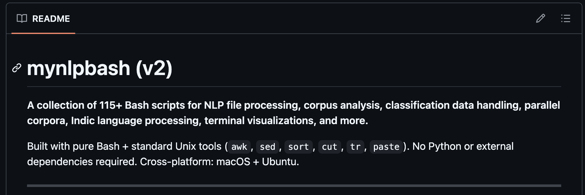
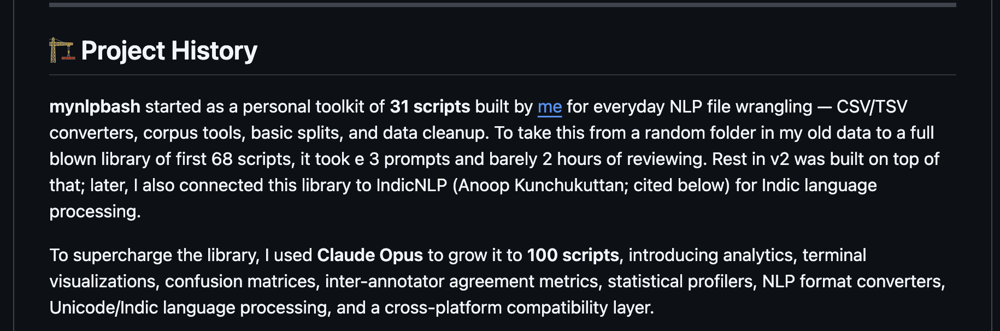
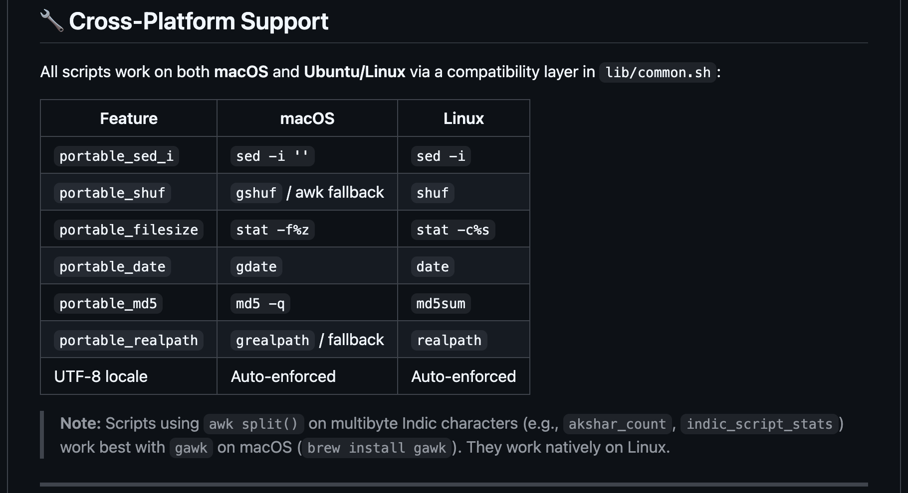

New Library: mynlpbash
If you’ve spent time working in an NLP lab, you know the drill: over the years, you accumulate a tangled web of scattered bash scripts, quick hacks, CSV/TSV files, and utility functions. They work, but only you know exactly how to run them, and usually only on the specific machine they were written for.
I had a bunch of these bash scripts lying around from my time in the lab, many of which used to work in tandem with the indic_nlp_library by Anoop Kunchukuttan. Back in the day, this was the our go-to toolkit for all Indic language processing needs.
The scripts were functional, but they lacked documentation, structure, and extensibility. Reusing them meant copy-pasting code blocks and hoping paths wouldn’t break.
Claude
Instead of manually rewriting everything from scratch, a task I had been thinking about for months, I decided to enlist Claude via Antigravity. I fed my messy, disconnected bash scripts to the LLM and asked it to help me architect them into a proper Python library.
The results were fantastic. Claude didn’t just translate bash to Python; it helped me structure the whole thing as a project.

A Full-Blown Library!
What started as a weekend cleanup project is now a full-blown open-source library. The new toolkit not only encapsulates those old lab scripts but also provides a way to install/setup indic_nlp_library and use it for NLP processing, right alongside many other powerful NLP tools currently available on GitHub.

It drastically lowers the barrier to entry. Instead of worrying about setting up environment variables, downloading the right resource dictionaries, and managing paths for indic_nlp_library, the new wrapper handles the heavy lifting. You can directly call functions for tokenization, transliteration, and text normalization across multiple Indian languages and English. I will think more about adding my regular expression based scripts and WordNet management scriptsI have to this, that is a whole different set I still manage (but perhaps don’t use enough). Time to unify this whole thing into one.

I guess if you have old scripts and can’t make sense of them, it is worth throwing them into an LLM and asking it organize/extend them. You might be surprised by how easily your old hacks can be transformed into robust(ish) tools. Do check out [mynlpbash] @ https://github.com/dipteshkanojia/mynlpbash. :)